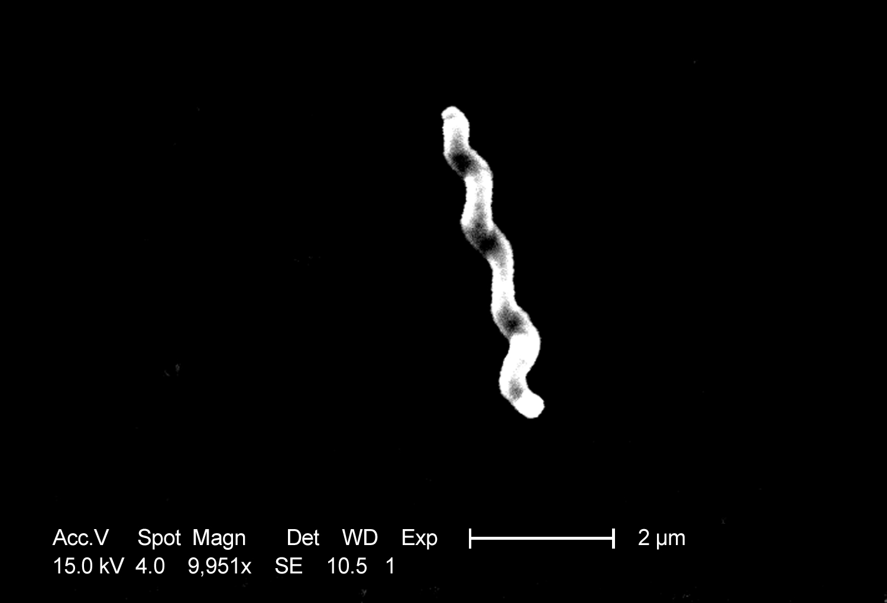

Diarreia 1–3 semanas depois: o gatilho
Em 75% dos casos a pós-reatividade é pós-infecciosa — e o #1 é Campylobacter jejuni.
Amarrar a etiologia autoimune reativa, a janela pós-infecciosa e o agente mais comum.
Autoimune e reativa
Guillain-Barré é autoimune e reativa. O paciente faz uma inflamação prévia; essa inflamação gera formação de anticorpo / célula que ataca a bainha de mielina no sistema nervoso periférico.
75% pós-infecciosa
Em 75% dos casos, essa pós-reatividade é pós-infecciosa.
Gatilhos citados: dengue, chikungunya, Zika, COVID, HIV, micoplasma (pneumonia), entre outras.
Campylobacter e a janela clássica
A causa mais comum é infecção prévia por Campylobacter jejuni. "Jejuni" remete a viver no jejuno; é agente que causa diarreia.
Quadro clássico de prova: paciente com diarreia e, 1 a 3 semanas depois, inicia a polineuropatia.
Por que importa na prática: a anamnese de "diarreia recente" ou "dengue há 15 dias" vira o gatilho que fecha a hipótese na porta.
Resumo operacional: infecção → 1–3 semanas → anticorpo → mielina SNP → GBS; #1 = C. jejuni.

CDC / Dr. Patricia Fields, Dr. Collette Fitzgerald; Janice Haney Carr (PHIL #5781, 2004) · Domínio público · fonte
O bacilo que dispara a cascata
Este organismo espiralado vive no jejuno e causa diarreia. O que o torna central no GBS não é a infecção intestinal em si — é o mimetismo molecular: antígenos do C. jejuni se parecem com gangliosídeos do nervo periférico. O anticorpo produzido contra a bactéria atravessa a bainha de mielina 1 a 3 semanas depois.
O que o paciente sente e o exame mostra quando o nervo motor é o preferido.
Quiz
Q1. A causa infecciosa mais comum associada a Guillain-Barré é:
Q2. O intervalo clássico entre diarreia e o início da polineuropatia é:
Q3. Em quantos casos a pós-reatividade é pós-infecciosa?